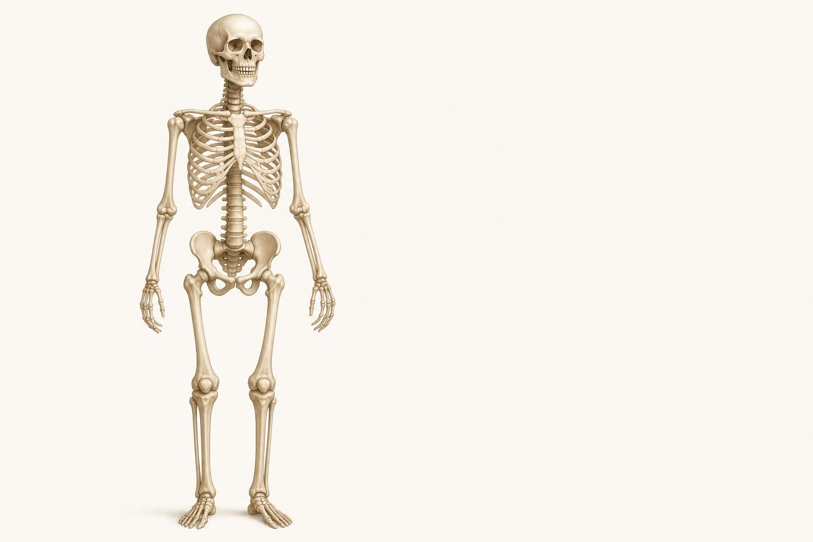
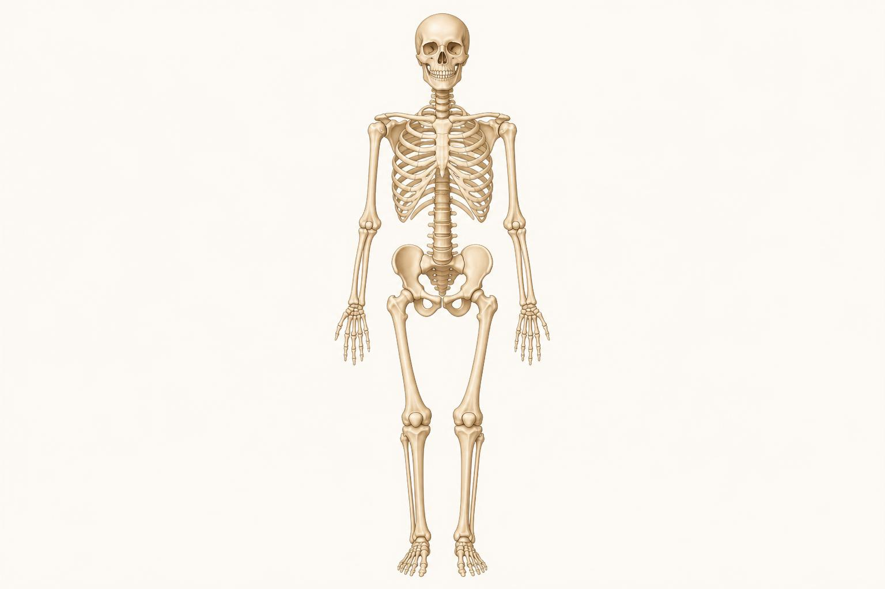
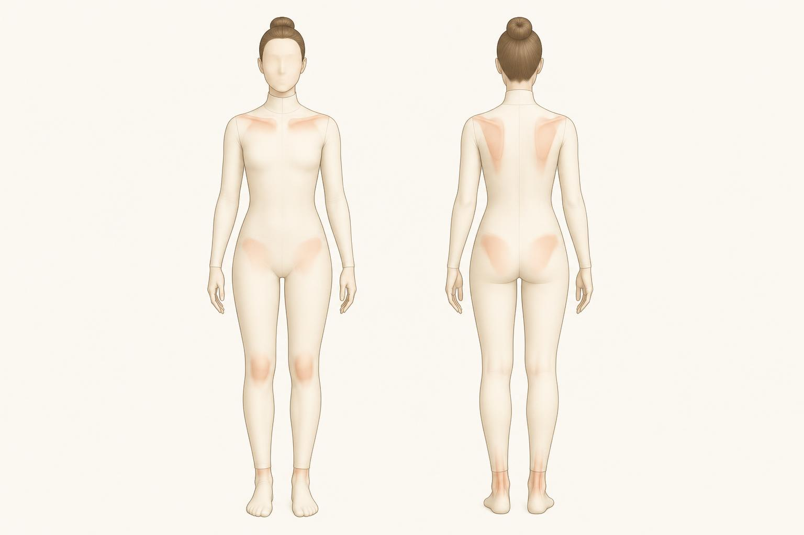

The Skeleton and the Landmarks You Palpate
Not every bone, just the frame the muscles hang on and the bony points you can actually find under your fingers.
You do not need to name all 206 bones in the human body to coach well. What you do need is a working map: the big regions of the skeleton, how they connect, and a short list of bony points you can find by hand on almost any client, in any gym, with no equipment. That short list of palpable landmarks is where this chapter earns its keep. It is how you read a pelvic tilt, check that a knee is tracking over the toes, or confirm a shoulder is level, all without any tool but your own hands.
Think of the skeleton as scaffolding. Chapter 1 taught you that muscles pull one bone toward another. This chapter fills in what those bones actually are, at the level of detail a coach needs, no more. We will move region by region through the skeleton, and then spend the second half on the landmarks themselves: where each one sits, how to find it, and what you actually use it for on the floor.
Two skeletons in one: axial and appendicular
Anatomists split the skeleton into two groups, and the split is genuinely useful for a coach, not just textbook tidiness.
- The axial skeleton is the central column: skull, spine, rib cage, and sternum. It protects the brain, spinal cord, heart, and lungs, and it is the stable core that everything else hangs from.
- The appendicular skeleton is everything attached to that column: the shoulder girdles and arms, the pelvis and legs. These are the parts built for movement and leverage.
Keep that split in mind as we go. The axial skeleton is mostly about stability and protection, the appendicular skeleton is mostly about producing and controlling motion. A lot of coaching judgment, deciding whether to load a movement, or why a client feels a lift in their low back instead of their legs, comes back to whether the axial skeleton is staying stable while the appendicular skeleton does the moving.
The axial skeleton, region by region
Start at the top. The skull houses and protects the brain. For coaching purposes you can treat it as a single unit, one dense bony case that the neck has to balance and control. You do not need to know its individual plates.
Below the skull is the spine, and this is the one part of the axial skeleton worth learning region by region, because those regions behave differently under load. The spine is built from a stack of individual bones called vertebrae, grouped into five regions from top to bottom:
- Cervical spine, 7 vertebrae, the neck. Small and mobile, built for a wide range of head motion rather than heavy load bearing.
- Thoracic spine, 12 vertebrae, the mid and upper back. Each thoracic vertebra anchors a pair of ribs, so this region is naturally the stiffest and least mobile, traded for the rib cage's protection.
- Lumbar spine, 5 vertebrae, the low back. The largest individual vertebrae in the spine, built to bear the weight of everything above them, which is exactly why the low back is where you coach the most caution around loaded flexion.
- Sacrum, a single wedge-shaped bone formed from five vertebrae that fuse together in early adulthood. It sits between the two halves of the pelvis like a keystone.
- Coccyx, the tailbone, a small fused remnant at the very bottom of the spine.
One more detail matters more to a coach than the vertebra count: the spine is not straight. Viewed from the side, it has a gentle S shape, curving one way through the neck and low back and the opposite way through the mid back. These are called the spine's natural curves, and they exist for a mechanical reason, a curved column absorbs and distributes compressive load far better than a straight rod. When you cue a client to find a "neutral spine," you are asking them to keep those natural curves rather than flattening or exaggerating them under load. That single idea is worth more in daily coaching than knowing the name of any one vertebra.
Finally, the rib cage and sternum. Twelve pairs of ribs wrap from the thoracic spine to the front, and most attach, directly or by cartilage, to the flat breastbone in the center of the chest, the sternum. Together they form a protective cage around the heart and lungs and give the trunk its barrel shape. For coaching, the rib cage matters most as a breathing structure and as a reference point, where the ribs sit relative to the pelvis is one of the simplest visual checks of trunk position during a lift.

- 1Skull
- 2Clavicle (collarbone)
- 3Scapula (shoulder blade)
- 4Rib cage and sternum
- 5Humerus (upper arm)
- 6Lumbar spine
- 7Pelvis
- 8Femur (thigh)
- 9Tibia and fibula (lower leg)
The appendicular skeleton: girdles and limbs
The upper limb attaches to the trunk through the shoulder girdle, which is really just two bones per side: the clavicle (collarbone) running horizontally from the sternum to the shoulder, and the scapula (shoulder blade) sitting on the back of the rib cage. The scapula is only loosely anchored, held mostly by muscle rather than a tight joint, which is exactly why it can glide, rotate, and tilt so freely. That mobility is a feature, not a flaw, but it is also why shoulder coaching so often comes back to scapular control.
From the shoulder down, the arm has three bones you already know from Chapter 1: the humerus in the upper arm, and the radius and ulna forming the forearm side by side. Past the wrist, the hand is built from a small crowd of bones that a coach can group and move on from: the carpals (the cluster of small wrist bones), the metacarpals (the bones of the palm), and the phalanges (the finger bones). You do not need to name each individual carpal bone, that level of detail belongs to a hand surgeon, not a trainer.
The lower limb mirrors this pattern. The pelvis is the leg's equivalent of the shoulder girdle, except it is built for stability and weight bearing rather than mobility, so instead of two loosely connected bones you get one solid ring. Each side of the pelvis actually starts as three separate bones in childhood, the ilium (the broad wing you feel at your waist), the ischium (the sit bone), and the pubis (at the front, where the two sides meet), which fuse together by early adulthood into a single hip bone. Knowing those three names matters because several landmarks below are named directly after them.
Below the pelvis, the femur is the single long thigh bone, the longest and strongest bone in the body. The patella, the kneecap, sits in front of the knee joint, embedded in the tendon of the quadriceps. Below the knee, the tibia is the thick weight-bearing shin bone on the inside, and the fibula is the thinner bone running alongside it on the outside, mostly there for muscle attachment and ankle stability rather than load bearing. And just like the hand, the foot is a crowd of small bones best handled as three groups: the tarsals (the cluster of bones at the ankle and midfoot, including the heel bone), the metatarsals (the long bones of the foot's arch), and the phalanges (the toe bones). Again, no need to memorize each tarsal bone by name.
Notice the pattern. Large, mechanically distinct bones (humerus, femur, tibia, scapula) get individual names because you use them individually in coaching language. Clusters of small bones that always move together as a unit (carpals, tarsals) get grouped, because you will never need to tell a client "your capitate is tracking oddly." Learn bones to the resolution you actually use, and stop there.
The landmarks you actually use
Everything above is context. This is the part that changes what you do on the gym floor. A palpable landmark is a spot on the skeleton close enough to the skin that you can find it by pressing with your fingers, even through a light layer of soft tissue. Coaches use these constantly, usually without narrating it, to check alignment, take a rough measurement, or find a safe place to cue a stretch or a hands-on correction. Here are the ones that earn their place in daily use.
Anterior superior iliac spine (ASIS). The bony point at the very front of the pelvis, on the ilium. Run your fingers along the front of your hip bone until you feel a hard, slightly rounded knob just below where your waistband usually sits. Coaches use the ASIS, almost always together with the PSIS below, to read the tilt of the pelvis.
Posterior superior iliac spine (PSIS). The back-side counterpart to the ASIS, on the same ilium but at the rear of the pelvis. It often shows up as a small dimple in the skin on either side of the low back, sometimes called the "dimples of Venus." Slide your thumbs from the sides of the low back inward and down until you land on a small bony bump, usually right at the level of those dimples. Comparing ASIS and PSIS height on the same side is the single most useful hands-on check for pelvic tilt, covered fully in the palpation callout below.
Iliac crest. The long, curved upper rim of the ilium, the same bone the ASIS and PSIS sit on. You find it instantly: stand with your hands on your hips, and your palms naturally land on the iliac crest. Coaches use it as a level reference for pelvic and low-back positioning, and it is also the standard landmark for waist circumference measurements.
Spine of the scapula. A raised ridge of bone running diagonally across the back of the shoulder blade, from the inner edge of the scapula out toward the shoulder. Trace your fingers across someone's upper back and you will feel it as a distinct shelf under the skin. It marks the boundary between the upper and lower portions of several back muscles, and coaches use it as a reference point when locating rotator cuff muscles or checking scapular position and tilt.
Acromion process. The bony tip of the scapula's spine, where it curls forward and over the top of the shoulder joint. It is the highest point of the shoulder, the hard knob you feel right at the very top edge of the deltoid. Coaches use it to compare shoulder height side to side, to mark the boundary of the deltoid muscle, and as the standard bony reference point for shoulder width measurements.
Greater trochanter. The large, flat bony bump on the outside of the hip, at the top of the femur. Press into the outside of your upper thigh, level with your groin, and rock your leg slightly, you will feel a firm prominence move under your fingers. Coaches use it to check pelvic and hip alignment in side-lying positions, as a landmark for hip circumference, and as a reference point for hip abductor or external rotator function.
Spinous processes. The bumps you feel down the midline of someone's back when they bend forward, each one the bony tail of a single vertebra pointing backward. Run a finger down the center of the spine and you can count them, feel where the natural curves shift from one region to another, or spot a row that deviates to one side, a useful first flag for a scoliosis that deserves referral rather than a training decision.
Tibial tuberosity. A small bony bump on the front of the shin, just below the kneecap, where the patellar tendon anchors the quadriceps to the lower leg. Trace straight down from the center of the kneecap until the smooth shin bone gives way to a distinct raised bump, usually an inch or two below the joint line. Coaches use it as a fixed reference point for checking knee tracking during a squat or lunge, since the kneecap and this bump should stay roughly in line as the knee bends.
Medial and lateral malleoli. The two bony bumps that make up the ankle, one on each side. The medial malleolus, on the inner ankle, is the lower end of the tibia. The lateral malleolus, on the outer ankle, is the lower end of the fibula, and normally sits slightly lower and further back than its partner. Coaches use both as fixed points for checking ankle alignment and swelling, and as standard landmarks for measuring leg length or ankle range of motion.

- 1ASIS front hip point, read pelvic tilt
- 2Iliac crest top ridge of the pelvis
- 3Tibial tuberosity bump below the kneecap
- 4PSIS back hip dimples, pair with ASIS
- 5Scapular spine ridge across the shoulder blade
- 6Greater trochanter bony point at the side of the hip
Stand relaxed and find your anterior superior iliac spine on both sides, the hard points at the front of your hips. Now reach around and find your posterior superior iliac spine on both sides, near the dimples at the base of your low back. In a neutral pelvis, the ASIS and PSIS on the same side sit at roughly the same height, with the ASIS just slightly lower than the PSIS. If the ASIS sits noticeably lower than the PSIS, the front of the pelvis has dropped and the back has lifted, an anterior pelvic tilt. If the ASIS sits higher than the PSIS, the opposite has happened, a posterior pelvic tilt. You can do this same check on a client standing in front of you, comparing hand positions on the two landmarks rather than eyeballing posture from across the room. It turns a vague impression into something you can actually feel and compare.
Bony landmarks are firm and specific, but the tissue around them is not always comfortable to press on, especially the PSIS, iliac crest, and greater trochanter. Use flat fingers or a thumb, not a knuckle, ask before you touch a client at all, and stop if anything feels off, swelling, unusual warmth, or pain out of proportion to light pressure. Palpation gathers information, it is not a treatment technique, and anything beyond a quick landmark check belongs to a manual therapist or medical professional.
The takeaway
You now have the skeleton at the resolution a coach needs: the axial skeleton as the stable core, the appendicular skeleton as the moving limbs and girdles, the spine understood by region and curve rather than by individual vertebra, and the hand and foot grouped sensibly instead of memorized bone by bone. On top of that frame sits the real payoff, a short, reliable list of bony landmarks you can find with nothing but your hands: ASIS and PSIS for pelvic tilt, the iliac crest and greater trochanter for hip alignment, the acromion and spine of the scapula for the shoulder, spinous processes for the spine, and the tibial tuberosity and malleoli for the knee and ankle. Practice finding each one on yourself first, then on a client, until your hands go straight there without hunting.